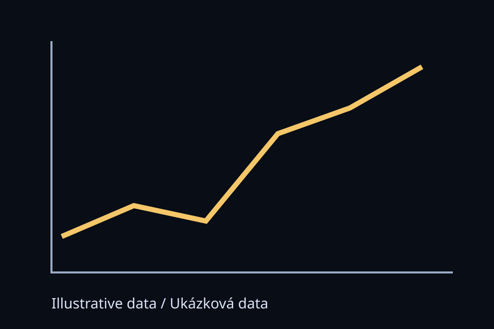

Let the evidence occupy the space
Keep the complete source image beside a compact explanation. Use Sources for the detailed record.
The curve is illustrative. It is not a measured time series.
This evidence example needs no playback controls.